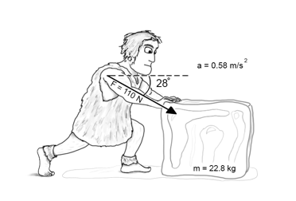

Question 22
Ötzi is a pre-historic human who is searching for
blocks of ice to build his shelter. He finds a 22.8 kg block of ice and
pushes it across a flat frozen lake back to his village. He applies a force of
110 N at an angle of 28° to the
horizontal. The block begins to accelerate slowly at a rate
of 0.58 m/s2.

What is the magnitude of
the frictional force between the block of ice and the frozen lake?